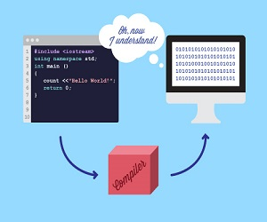
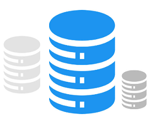

Mi pagina con Bootstrap
Bootstrap es un framework front-end utilizado para desarrollar aplicaciones web y sitios mobile first, osea, con un layout que se adapta a la pantalla del dispositivo utilizado por el usurario.
| # | Nombre | Paterno | Materno |
|---|---|---|---|
| 1 | Luis | Ramos | Gomez |
| 2 | Maria | Castro | Lopez |
| 3 | Carlos | Sanchez | Diaz |
Compiladores
Genera lenguaje ensamblador primero y luego traduce el lenguaje ensamblador al lenguaje máquina,combina los módulos de lenguaje de máquina en un programa ejecutable.
¿Que es un compilador? Contabilidad
La definición teórica dice que la contabilidad es el sistema de control y registro de los gastos e ingresos y demás operaciones económicas que se realizan en un negocio, empresa o entidad.
¿Que es contabilidad?Base de Datos
Es una herramienta para recopilar y organizar información. Las bases de datos pueden almacenar información sobre personas, productos, pedidos u otras cosas.
¿Que es base de datos? 